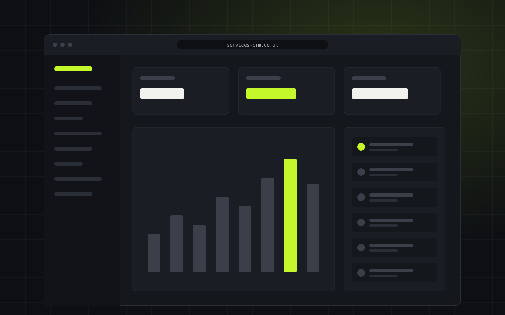

Services CRM
A multi-tenant SaaS application that takes services businesses from first enquiry to paid invoice.
Problem solved Enquiries, quotes, scheduling, invoicing and payments in one place, with branded PDF quotes and automated payment reminders. Per-tenant data isolation, and authentication hardened against credential stuffing with scrypt password hashing, CSRF protection and rate limiting.